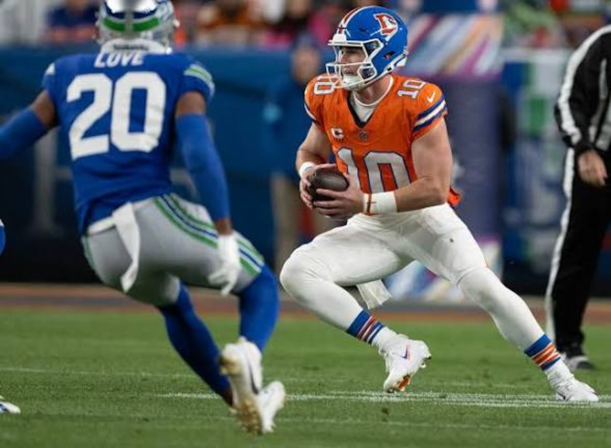
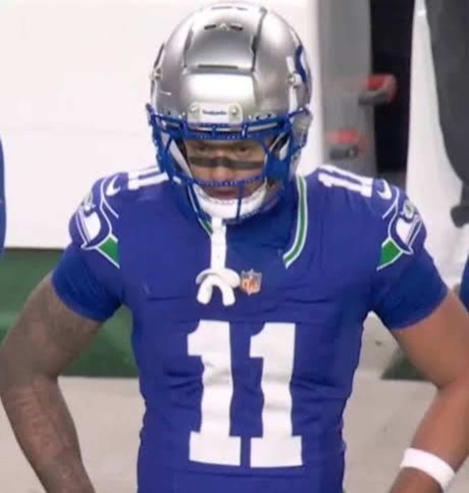
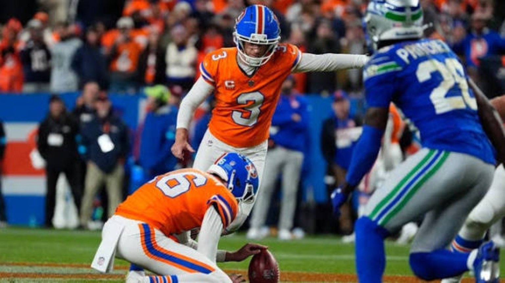

There are wins that tell us a team has arrived. There are losses that tell us a team has work to do. Then there was Thursday night in Denver—a game that somehow managed to expose serious concerns about both teams, even while one of them walked away 4–2.
The Broncos beat the Seahawks 17–14 in overtime on Wil Lutz's 53-yard kick after Ja'Quan McMillian picked off Sam Darnold. But look past the final score. Denver managed just 168 net offensive yards, punted on all six real second-half possessions, and still won. Seattle's defense did everything it could to recover from a shaky first half. Jaxon Smith-Njigba came alive. Seattle tied the game with seconds remaining. And once again, when the ball was in its quarterback's hands with the game hanging there, the ending went the wrong way.
At 3–3, the defending Super Bowl champions have now lost two straight and three of their last four. That isn't a funeral for the season. But we're six games in, and the conversation has officially moved from whether Seattle can repeat to whether it can clean up the kind of mistakes that sink good teams.
THE FILM WILL HAVE QUESTIONS FOR BOTH OFFENSES.
DENVER CONTROLLED THE FIRST HALF.
THEN THE OFFENSE DISAPPEARED.
Seattle actually scored first, with Jason Myers hitting from 55 yards. But Denver found the kind of rhythm we hadn't seen consistently from this offense. J.K. Dobbins finished a 16-play, 74-yard touchdown drive with a four-yard run, and RJ Harvey later scored on a one-yard direct snap to cap a nine-play, 79-yard march. What looked like a defensive struggle became a 14–3 Broncos halftime lead.
The formula wasn't explosive. Sean Payton, again handling the calls, simplified things for Bo Nix with the run game, shorter throws and extended drives. It took pressure off the quarterback and forced Seattle's defense to defend every yard. The second half was a completely different story. The Broncos could not stay ahead of the chains, could not manufacture chunk plays and could not put Seattle away. Six consecutive second-half punts handed the Seahawks chance after chance.
Seattle wasn't sharp enough to cash them all in. A promising third-quarter drive ended when Myers missed from 47 yards after Darnold took a drive-killing sack. The comeback finally arrived in the fourth: George Holani's one-yard touchdown and a tipped two-point throw hauled in by Rashid Shaheed made it 14–11. Then, after another Denver punt, Seattle drove for Myers' tying 34-yarder with three seconds left. The champs had dragged themselves back into a game they'd spent most of the night chasing.
But the overtime possession ended with McMillian jumping on a Darnold mistake at Seattle's 43. Denver moved into range; Lutz made the kick. Ball game.

BO NIX DID ENOUGH TO WIN.
THAT'S NOT THE SAME AS PLAYING WELL.
Nix completed 17 of 27 passes for 107 yards, no touchdowns and no interceptions. There is value in protecting the football—especially when the opponent hands you multiple possessions—but 107 yards on 27 attempts cannot become the standard for a franchise hoping to win January games. Denver scored both touchdowns on the ground, not through the air. Nix was more comfortable while the offense had balance. Once Seattle tightened up, the Broncos had almost no answers.
Our biggest concern isn't that Nix failed to chase highlight-reel throws. It's the lack of aggression and production when Denver needed one drive to close out the game. A quarterback should be able to manage more than short completions and survival mode. Payton needs to create easier reads, yes, but at some point the QB has to threaten a defense vertically, convert manageable downs and punish single coverage when the opportunity is there.
And let's be fair: Nix didn't put the ball in danger the way Darnold did. He didn't lose the game for Denver. The distinction matters. Still, the Broncos being 4–2 should encourage them to solve the offense—not convince them they have. It's hard to keep asking a defense to rescue an attack that produced only 168 net yards.
SAM DARNOLD:
THE NUMBERS ARE BAD. THE TIMING IS WORSE.
27 of 51. 278 yards. Zero passing touchdowns. Two interceptions. Five sacks. Darnold's stat line isn't pretty. Yet even that doesn't fully explain the damage. His first interception came with Seattle threatening late in the fourth quarter, on third-and-short near Denver field-goal territory. Kris Abrams-Draine took the ball away. The Seahawks got another possession because their defense forced an immediate three-and-out; they used it to tie the game. That's how close Darnold came to having his mistake erased.
Overtime offered another clean slate. Seattle won a first down, JSN made another catch, and the ball came back to Darnold on third down. The pass went to McMillian instead. Once Denver got the short field, a field goal was all it needed. Two interceptions, both late, both expensive—that's the difference between struggling and costing your team its margin for error.
There are legitimate factors around him. Protection broke down against Denver's pressure, the running game didn't consistently control the down-and-distance, and the offense has had to ask Smith-Njigba to manufacture far too much. But none of those factors excuse poor decisions in scoring territory or in overtime. Great quarterbacking isn't just the ability to bring a team back. It's recognizing when the next mistake would waste everything that got you back.
With seven interceptions on the season after this game, Darnold's ball security is an urgent problem. Seattle knows he can play at a championship level. We're not ignoring what last season proved. But past credentials don't make the current throws disappear. Mike Macdonald has to decide how much longer the offense can live with this level of volatility; the answer should come from film, protection adjustments and practice—not a knee-jerk declaration that one bad night ends the partnership.

JSN GAVE SEATTLE LIFE.
HE COULDN'T SAVE EVERY POSSESSION.
If we're passing out flowers after this game, Jaxon Smith-Njigba gets his first. He had just two receptions for 11 yards at halftime. With Denver short-handed in the secondary but attacking Seattle's timing, even the Seahawks' most dependable receiving threat couldn't consistently get going early. Then the game changed.
Smith-Njigba finished with 12 catches on 16 targets for 134 yards. That means he produced 10 catches and 123 yards after the break, including overtime. A 30-yard fourth-quarter connection helped flip field position, and his fourth-down catch on the touchdown drive kept Seattle alive. He made another crucial conversion in overtime before the second interception.
This is why we separate individual performance from team result. JSN didn't need a touchdown to show the difference an elite route runner makes. He found space, finished catches, absorbed contact and made himself available when his quarterback was having trouble trusting what he saw. At times it felt like Seattle's passing offense had one consistent solution: find No. 11 and let him win.
That is a compliment to JSN and a warning for Seattle. A defending champion shouldn't need a receiver to be spectacular just to reach overtime in a game its defense dominated for two-plus quarters. The rest of this passing attack has to relieve the pressure, and the offense must find easier touches early rather than asking its best player to rescue the operation late.
TWO DEFENSES DESERVED THE WIN.
DENVER'S MADE THE LAST PLAY.
Let's not give all the credit to quarterback mistakes. Denver's defense made Darnold uncomfortable from the opening series, registering five sacks and 17 quarterback hits. That's real heat, not merely a quarterback having an off night. And Denver did it without defensive backs Patrick Surtain II and Talanoa Hufanga. The secondary held up long enough for the rush to change the game. Abrams-Draine's late fourth-quarter pick and McMillian's overtime interception were the defensive plays that decided it.
Seattle's defense deserves just as much respect for its response. After conceding those two long touchdown drives in the first half, the Seahawks adjusted and shut off Denver's supply of clean offense. The Broncos gained roughly 30 yards after halftime before the overtime kick, were only 3-for-14 on third down for the game, and never scored an offensive point after the second quarter. Ernest Jones IV led Seattle with nine tackles and added a sack, an example of the effort that gave the offense enough possessions to steal a road game.
That's what makes Seattle's loss sting. This wasn't a defense getting steamrolled for four quarters. It was a unit that settled in, won its assignments and handed the offense repeated chances. Denver's defense got the final takeaway; Seattle's defense spent two-plus quarters giving its quarterback a chance to prevent one.
| Team measure | Seattle | Denver |
|---|---|---|
| Net total yards | 353 | 168 |
| First downs | 24 | 13 |
| Third down | 7/17 | 3/14 |
| Turnovers lost | 3 | 0 |
| QB sacks allowed | 5 | 2 |
The most revealing number on that board is the turnover gap. Seattle outgained Denver and moved the chains more often. It also handed Denver three takeaways and failed to take the ball away once. Winning the yardage battle is worthless when the most valuable possessions belong to the other team.

IS SEATTLE IN TROUBLE
AT 3–3?
We're not writing the obituary for a defending champion in October. There's too much season left, too much defensive talent and too much ability in players like Smith-Njigba. But we can't pretend this is simply one tough overtime road loss either. Seattle has now dropped two in a row, including last Sunday's 32–29 division loss to San Francisco, and three of the last four. That's a pattern worth evaluating instead of waving away with the Super Bowl ring.
Here's where the urgency comes from: the NFC West is not going to wait for Seattle's offense to find its identity. San Francisco entered the week undefeated, and every squandered winnable game makes the margin thinner. Last year's championship formula included resilience, timely quarterbacking and a defense that could carry stretches. The defense still looks capable of doing its part. The offensive execution, ball security and down-to-down consistency are lagging badly behind.
Is Darnold in danger of losing his job? It's fair to discuss the quarterback room when he's throwing interceptions at this rate, particularly after Drew Lock provided relief earlier in the year. But we're not calling for a change off emotion alone. The staff should first decide whether protection, play design or the quarterback's choices are driving the problem most. If the mistakes keep coming, the conversation changes from competition to necessity. Our bigger point: a champion can't keep treating turnovers as a correctable detail while they determine game after game.
Seattle's next reported test is an October 25 matchup against Kansas City. That gives the Seahawks extra time after the Thursday game, but the opponent isn't offering a soft landing. We want to see a cleaner pocket, a more credible ground threat and a quarterback who can work an entire game without gifting away the two or three snaps that change everything.
THE BRONCOS ARE 4–2.
CAN THEY WIN WITHOUT A DEFENSIVE BAILOUT?
Denver earned this result. We don't penalize a defense for making a game-saving play or a kicker for cashing in on it. You have to finish, and the Broncos finished. Getting to 4–2 through injuries in the secondary, with multiple different ways to survive, speaks to toughness and belief. That's real.
But the offense leaves us unconvinced. Nix doesn't need to become a 350-yard gunslinger every week. He does need to establish enough of a passing threat that defenses can't sit on the short field. Payton needs more dependable sequencing once the scripted opening gives way to halftime adjustments. More timely shots, smarter protection solutions, better third-down answers and at least a couple of drives where the offense dictates terms rather than hoping for a turnover. If they can pair even a functional offense with this defense, Denver has a real chance to matter in the AFC race. If they can't, a 4–2 start could disguise the limitations until a better opponent makes them impossible to ignore.
ONE WINNER.
TWO WARNING SIGNS.
For Denver: The defense is capable of winning games by itself. That is both the team's strength and its danger. The Broncos are 4–2, but until Bo Nix and the offense threaten defenses for four quarters, this doesn't feel like a finished contender.
For Seattle: We still respect the defending champs. We still believe the defense and JSN provide a foundation. But 3–3 is no longer a random early-season stumble when late turnovers keep deciding the outcome. Darnold doesn't have to be perfect; he does have to stop making the most damaging throw of the night when the game is on the line.
Bottom line: Denver survived because its defense refused to fold. Seattle lost because, when that same level of defensive fight gave it another chance, the offense couldn't protect the football. In October, that's a warning. By December, it could decide who is playing meaningful football.